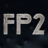
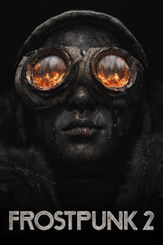

 Frostpunk_2_
Detalles
|  | |
| Tiempo de juego | No Jugado |
| Última actividad | Nunca |
| Añadido | 11/5/2024 22:37:13 |
| Modificado | 11/6/2024 22:30:18 |
| Estado de finalización | No Jugado |
| Librería | Playnite |
| Fuente | 4TB TANK |
| Plataforma | PC (Windows) |
| Fecha de lanzamiento | 9/20/2024 |
| Puntuación de la Comunidad | 73 |
| Puntuación de la Crítica | 85 |
| Puntuación de usuario | |
| Género | Estrategia Simuladores |
| Desarrollador | 11 bit studios |
| Editor | 11 bit studios |
| Característica | Cloud Saves Cromos De Logros De Préstamo Familiar Un Jugador Workshop |
| Enlaces | Punto de encuentro Discusiones Guías Noticias Página de la tienda PCGamingWiki Logros Workshop |
| Tag | Ambientales Construcción de bases Construcción de ciudades Estrategia Gestión Gestión de recursos Gran banda sonora Las elecciones importan Nieve Política Posapocalípticos Secuela Simulación Simulador de colonias Simulador de política Steampunk Supervivencia Terror psicológico Un jugador Violentos |
Descripción

Frostpunk 2 eleva el género de la supervivencia urbana a otro nivel. Asume el papel de un Gobernante y lidera la ciudad a lo largo de una serie de calamidades que se desarrollan en un entorno nevado posapocalíptico. Construye grandes distritos con sus necesidades y demandas. Enfréntate a los conflictos de intereses de las distintas facciones que habitan en tu metrópolis. Al aumentar las necesidades de la ciudad y el poder de cada grupo, solo tú podrás dirigir la sociedad hacia un incierto futuro.


El mundo está sumido en un invierno perenne que obliga a la ciudad a expandirse como única forma de supervivencia para la humanidad. Para crecer, la metrópolis necesita recursos como el carbón y el petróleo, al igual que sus ciudadanos necesitan calor y alimentos. En Frostpunk 2, tu misión será enfrentarte a este círculo incesante de oferta y demanda.


La cifra de habitantes irá creciendo lentamente y complicando las labores de gobierno y la forma de satisfacer sus exigencias. Como Gobernante, tendrás que desenvolverte con mucho cuidado en la maraña de intereses de los distintos grupos que habitan tu ciudad.


Los habitantes de tu ciudad quieren tener voz y voto a la hora de dirigir las cosas. Cada facción tiene una ideología y una perspectiva de futuro, pero todas tienen algo en común: una sed de poder insaciable. Elige cuidadosamente tus aliados en el Consejo.


La historia de Frostpunk 2 presenta una saga con varios capítulos ambientada en los páramos helados. Esta campaña, que sigue la vida del Gobernante, te permite sentir la carga del liderazgo y de ser el responsable de miles de vidas. Al mismo tiempo, el modo sandbox (llamado constructor de utopías) te ofrece un tiempo de juego infinito y permite llevar a cabo experimentos sociales y estructurales sin límites.


Frostpunk 2 incluye una herramienta de creación de mods versátil y muy completa. El FrostKit te permitirá crear mapas, modelos y escenarios en el juego. Ahora, ¡el destino de tu ciudad solo se verá limitado por tu imaginación!